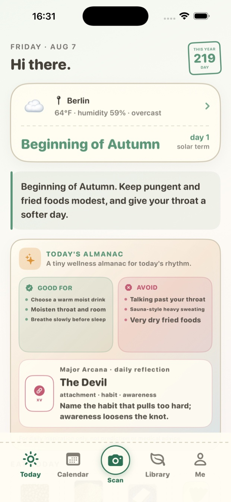
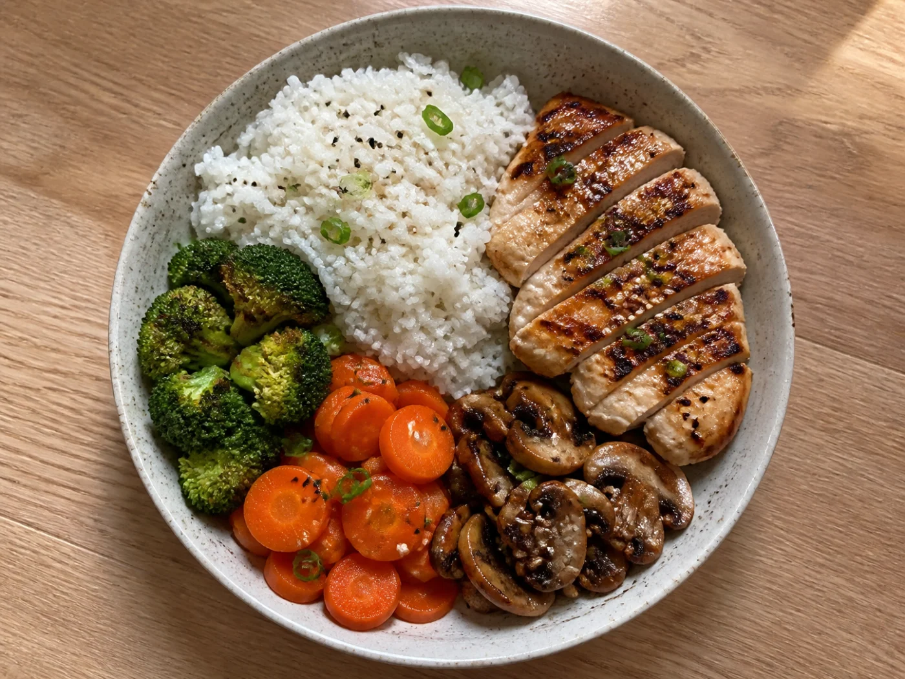
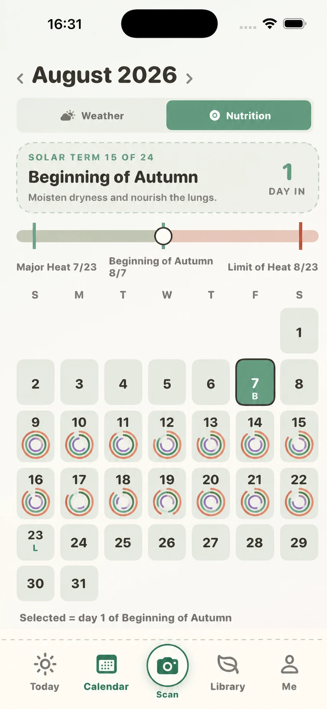
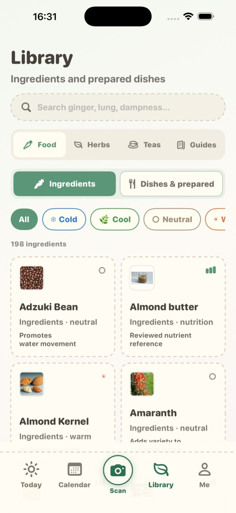

01
Eat with the season
- Weather & solar terms
- Daily food guidance

Available now · App Store
NOURISHDAY · FOOD CALENDAR
One photo becomes reviewed nutrition, a food calendar, and a clearer daily rhythm.

ONE MEAL. THREE MOMENTS.
A LIVING 14-DAY VIEW
Illustrative data · August 4–17
INSIDE NOURISHDAY



SIMPLE BY DESIGN
FREE
For everyday tracking
OPTIONAL PREMIUM
For deeper nutrition insights
YOU STAY IN CONTROL
QUICK ANSWERS
NourishDay is now available on the App Store. Use the direct App Store link; keyword search results for a newly released app may take time to update.
Yes. It includes the five core tabs, three image analyses per day, and the latest seven days of nutrition history.
No. Recognition, nutrition, and seasonal wellness content are for education and general wellness, not diagnosis or treatment.
NOW AVAILABLE ON THE APP STORE